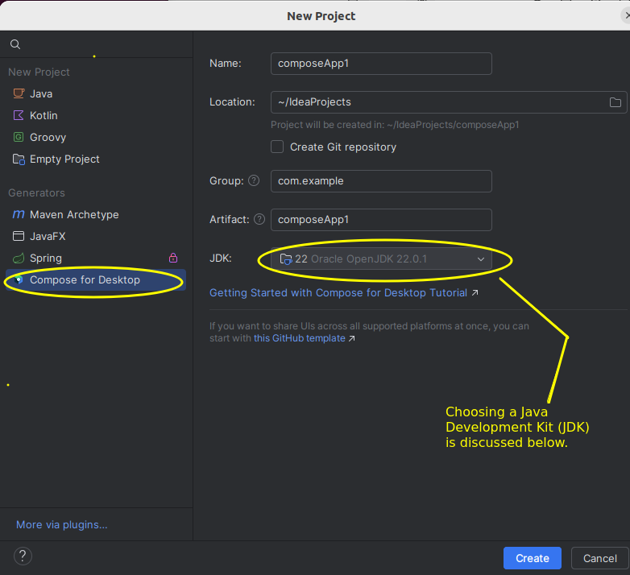
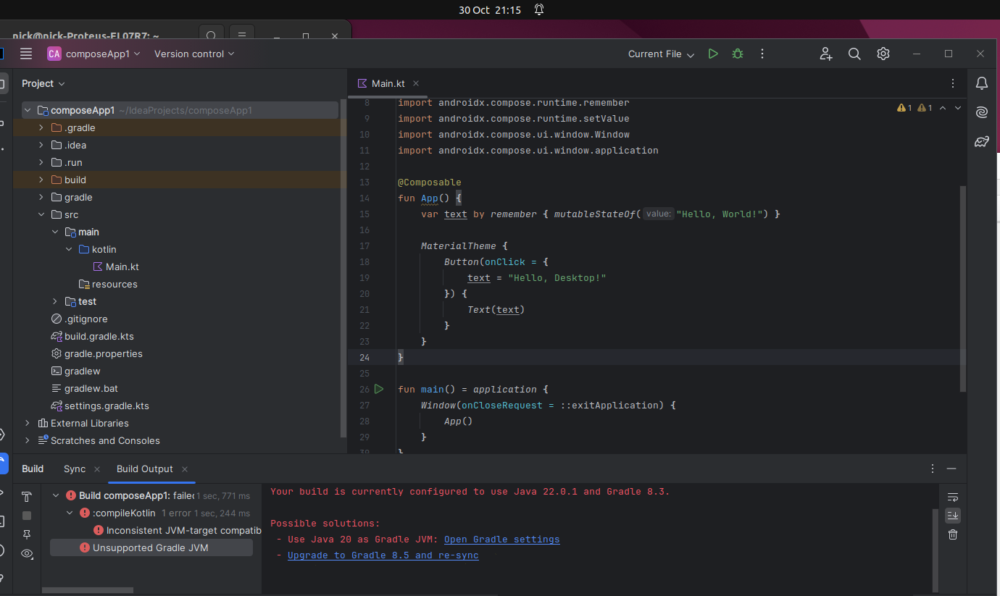
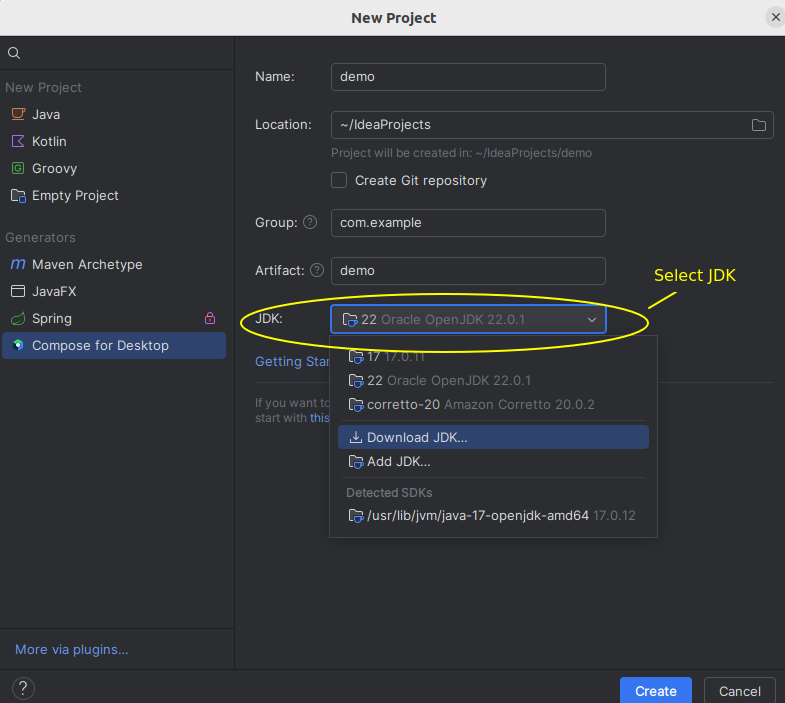
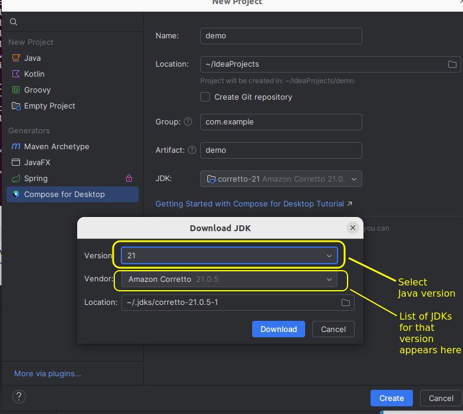
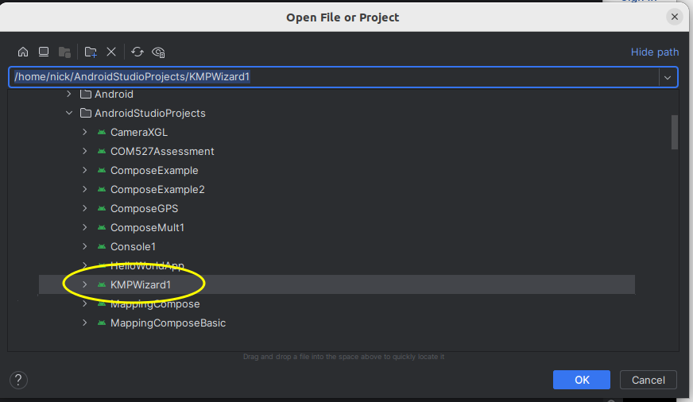

Compose Multiplatform
Compose Multiplatform is a multi-platform framework to allow you to develop GUI applications across a range of platforms. Originally a framework for Android apps specifically (Jetpack Compose), it now supports a range of different platforms including common desktop platforms (Windows, Linux, Mac) as well as iOS.
Declarative layouts
Compose Multiplatform adopts a declarative approach to UI development. What does that mean?
- With a declarative approach, by contrast, we declare the layout by writing a series of Kotlin functions called composable functions and also specify the data within them by inserting that data directly into the layout where it's needed. We store that data in what is known as state and change the state in response to UI events, for example button clicks. Importantly, changing the state triggers an automatic re-rendering of the UI.
So, code for a declarative UI might look something like this (not real code):
ScreenLayout = {
currentName: StringStateVariable
TextField { onKeyPress = { set currentName to TextField contents } }
TextLabel { contents = "Hello $currentName!" }
Button { text : "Set name to blank", onClick = { currentName = "" } }
}
Note how we store a name (that the user might enter) in a state variable called currentName. The TextLabel shows the message "Hello" plus the name from the state, the TextField allows the user to enter a new name, and the name is updated to the text field contents when a key is pressed while it's focused, and the Button clears the name to a blank string when it's clicked. Note how the TextField tracks the state, so that whenever the state is updated, the TextField contents automatically update.
Getting started with Compose Multiplatform
There are two main ways of starting up a Compose Multiplatform project:
- Create a Compose Multiplatform project on IntelliJ IDEA (recommended on your own computer);
- Use the Compose Multiplatform Wizard on Android Studio (recommended on the university computers).
The Nutanix virtual machine for this module is not recommended for working with Compose Multiplatform, as it runs very slowly and certain setups produce obscure errors.
On IntelliJ IDEA
Load up IDEA:

Create a project and ensure you select Compose for Desktop as the project type. An IMPORTANT point is that you need to choose a version of Java - remember that Kotlin runs on the Java Virtual Machine. The Java Development Kit (JDK) is required to compile Kotlin into Java bytecode. The default version is likely to be 22 or 23 but these may require an update to the Gradle build tool (see below) (see below). So your choices are:
- Use the most up-to-date version of Java and upgrade your Gradle;
- Use an older version of Java.
If using up-to-date Java, you may see this error come up:

This is because Java Development Kit (JDK) 22 requires an updated version of Gradle. What is Gradle? It is a build tool, used to build projects from source and handle dependencies (such as Compose Multiplatform). Compose Multiplatform uses Gradle to build apps. The Gradle website can be found here. You can choose to either upgrade Gradle to use a compatible version with your JDK, or downgrade the JDK. If you choose to upgrade Gradle to version 8.5, it will download version 8.5 (warning! this might take some time).
Downgrading Java
As an alternative to upgrading Gradle you can use an older JDK. When you create a project, you will be asked to choose a version of the JDK. If the version you want is not present, you can download an alternative version by selecting "Download JDK" as shown below.

If you choose to download a JDK you will be prompted as shown below. You need to choose the Java version and it will offer a list of JDKs for that version of Java. The older versions are likely to be Amazon's Java distribution called Corretto, but these are fully compatible with the Oracle version.

Corretto 21 or 20 should work fine.
On Android Studio
On the university computers, you are strongly recommended to use use Android Studio with the Kotlin Multiplatform Wizard - on the main PC, not Nutanix. Android Studio (which is installed at the university) is an IDE aimed at Android development, however you can also use it for Compose Multiplatform development even if you are just developing for desktop.
If on your own computer, you can use IntelliJ IDEA as described above, but if you want to use Android Studio, first download it and install: see here.
The Kotlin Multiplatform Wizard auto-generates a project with the correct settings for building successfully. Generate the project using the Wizard, and download it, at kmp.jetbrains.com. You choose your target platforms: for our purposes we only need Desktop so select Desktop and unselect Android and iOS.
Unzip the wizard-generated project and copy the project folder to your AndroidStudioProjects folder in your home folder. This is generated by Android Studio but may not exist if you have not run Studio yet, so if it's not present, create this folder.
Then open the project. Load Android Studio, select "Open" and open the project (in my case it is called KMPWizard1, in your case give it whatever name you specified in the wizard):

A full information page about building and running wizard-generated Kotlin Multiplatform projects is available from Jetbrains.
It will take some time to build. Once it's built it's important you run it the correct way, using the composeApp:run Gradle task. Pressing the green "run" button on its own will not work, failing with a Cannot find MainKt error (i.e. it cannot find your main()). You should follow the Run your application on desktop instructions carefully - these explain how you can specify the correct run configuration.
Developing with Compose Multiplatform
We will now start looking at the structure of a Compose Multiplatform application. If you look at the generated code (look at src-main-kotlin-Main.kt in IntelliJ IDEA - Gradle uses a different folder structure for projects) it will look something like this:
import androidx.compose.material.Button
import androidx.compose.material.MaterialTheme
import androidx.compose.material.Text
import androidx.compose.runtime.Composable
import androidx.compose.runtime.getValue
import androidx.compose.runtime.mutableStateOf
import androidx.compose.runtime.remember
import androidx.compose.runtime.setValue
import androidx.compose.ui.window.Window
import androidx.compose.ui.window.application
@Composable
fun App() {
var text by remember { mutableStateOf("Hello, World!") }
MaterialTheme {
Button(onClick = {
text = "Hello, Desktop!"
}) {
Text(text)
}
}
}
fun main() = application {
Window(onCloseRequest = ::exitApplication) {
App()
}
}
What's going on here?
- You will notice that, as always, there is a
main()function which is the starting point of our application. Note, however, the different syntax:fun main() = application { ...rather thanfun main() { ...What's this doing?application()is part of the Compose API. Compose Multiplatform, like other UI libraries, needs to work in an asynchronous (multitasking) manner, e.g. the user can continue to interact with the UI while the application is performing some processing. However, the console is a purely synchronous environment. Theapplication()function essentially allows yourmain()to launch asynchronous code. See here and here. We will look at this topic in more detail in Mobile Application Development when we examine coroutines. - We then create a
Windowobject. As you can probably guess, this represents a UI window. Note how we give theWindowanonCloseRequestparameter (Kotlin has named parameters, like Python, i.e. we do not need to pass in values for all parameters or pass them in order, we can refer to them by name). This parameter is set equal to the in-built functionexitApplicationwhich closes the application down. So, when the user closes the window, the application will exit. - Note how we then specify a lambda function associated with
Windowand inside this lambda we launchApp().App()is a composable representing our application.
Composable functions
In Compose Multiplatform, we define each UI component as a composable function. Composable functions typically represent reusable groups of UI elements which work together, e.g. a login composable function could contain username and password fields and a button which logs the user in.
Example of a composable function
In the auto-generated code you will find an App() composable. We will cover what this auto-generated code does later, but for now, delete the pre-generated App() and replace it with this new App():
@Composable
fun App() {
Text("Hello Compose World!")
}
Note how we create a function App() labelled with the annotation @Composable. This turns App() into a composable. Annotations are meta-language instructions which are converted by a pre-processor into more complex Kotlin or Java code. The App function contains a Text composable which displays a Hello World message.
Writing custom composables
So far we have just filled the default App() composable. However we can create our own composables, separate to App(), and include them within App() to develop a more complex UI. For example:
@Composable
fun HelloWorld() {
Text("Hello World fron the Custom Composable!")
}
@Composable
fun App() {
HelloWorld()
}
Note how we include HelloWorld in the App composable.
A more complex composable function
import androidx.compose.foundation.layout.Column // new import
@Composable
fun TwoTexts() {
Column {
Text("Hello World!")
Text("Welcome to Compose Multiplatform Development")
}
}
Note that in all these examples, where an import is marked with // new import you need to add it to the list of imports at the top of the file which is auto-generated when you set up a Compose Multiplatform project.
This example creates a composable function with two UI elements: two Text elements arranged vertically. The vertical layout is defined with Column which arranges all the elements within it in a vertical column. There is also Row which arranges all elements within it horizontally.
Controlling the appearance of UI elements
We can control the appearance of a UI element by setting various parameters on the element. For example we can control colour, font style (normal or italic), font weight (normal or bold) and font family. Here is the previous example with the appearance of the Text elements styled:
import androidx.compose.ui.text.font.FontStyle // new import
import androidx.compose.ui.text.font.FontFamily // new import
import androidx.compose.ui.text.font.FontWeight // new import
import androidx.compose.ui.graphics.Color // new import
@Composable
fun TwoTextsStyled() {
Column {
Text("Hello World!", color = Color.Red, fontStyle=FontStyle.Italic, fontFamily=FontFamily.Serif)
Text("Welcome to Compose Multiplatform Development", fontWeight=FontWeight.Bold)
}
}
Hopefully much of this is fairly clear but a few points:
Note how each argument to Text is labelled with an identifier, e.g. fontStyle=.... As stated above when discussing the Window, this is an interesting feature of Kotlin which is also seen in Python; we do not have to pass in the arguments to a function in order if we label them. So Text() for example has color and fontStyle parameters and these can be specified in any order as long as they are labelled.
Passing in Parameters
We can pass parameters into our composables and use those parameters to control how they display, e.g this composable will display a given message a given number of times in a column by using a loop to include a Text the given number of times displayed in a given colour (black by default):
@Composable
fun MultiMessage(message: String, nTimes: Int, colour: Color = Color.Black) {
Column {
for(i in 1..nTimes) {
Text(message, color=colour)
}
}
}
This could then be included in your App as follows:
@Composable
fun App() {
MultiMessage("Hello Compose World!", 3, Color.Blue)
}
Events and State
Many UI elements in Compose Multiplatform come with an accompanying event handler, which runs when the user interacts with it. Examples include Button (which comes with a click handler) and TextField (which comes with an onValueChange event handler to handle the text in the text field changing). Event handlers are typically specified as lambda functions. We will now start building a GreetingBox which allows the user to enter their name and displays "Hello" plus their name.
@Composable
fun GreetingBox() {
Column {
TextField(value = "Enter your name: ", onValueChange={/* event handler */ })
Text("Greeting will go here")
}
}
Note how the TextField takes two compulsory arguments, the default text to place inside the text field, and the onValueChange event handler which runs when the user enters text (a lambda function). Note that here we have used named parameters in the TextField, we do not need to do this (as the value and onValueChange event handler are the first two parameters) but have added them for clarity.
How can we actually display a greeting in the Text corresponding to the name that the user entered, though? Or, in general, how can we dynamically update a Compose UI? We use composable state to do this. In event handlers, we update state variables, and then we include that state in other UI elements. When the state updates, the UI will automatically be refreshed. If you have worked with React in web development, you will recognise this pattern.
So how do we setup state? We have to declare a variable in this way, inside the Composable:
var name by remember { mutableStateOf("") }
The use of by remember creates a state variable called name which is initialised within the provided lambda to a blank string "". We will examine the meaning of this code, specifically by, in more detail in the Mobile Application Development module, but for now you just need to know that it initialises name so that it can act as a state variable and cause the composable to redraw itself when it changes.
We can then insert the state variable within the UI where we like, e.g:
import androidx.compose.runtime.remember // new import
import androidx.compose.runtime.mutableStateOf // new import
import androidx.compose.runtime.setValue // new import
import androidx.compose.runtime.getValue // new import
@Composable
fun GreetingBox() {
var currentName by remember { mutableStateOf("") }
Column {
TextField(value=currentName, onValueChange={ currentName = it })
Text("Hello $currentName!")
}
}
-
Note how we set the
valueof theTextFieldto the state variable so that the text field is always in sync with the current value of the state variable. - The
onValueChangeevent handler lambda for theTextFieldtakes the new text within the text field as its one and only parameter (it) so, in the event handler, we update the state variablecurrentNameto the current text in the text field. Then, in theTextelement, we include the state variable in our greeting, so the greeting will always sync with what the user entered in the text field.
Buttons
Buttons in Compose Multiplatform are quite easy to setup. Here is an example:
import androidx.compose.material.Button // new import
Button (
onClick = { /* make something happen when the user clicks the button */ }
) {
// Text as a child component of the button
Text("Click me!")
}
The Button function takes a number of parameters including an onClick event handler, for which we usually pass a lambda. After specifying the other parameters of Button we specify a lambda containing the text to display on the button as a Text component, which will make the Text a child component of the button and therefore make the text appear on the button.
Exercises
- Try out "Hello World" and the "TwoTexts" and "TwoTextsStyled" examples, above.
- Write a complete working app including a composable to allow the user to enter a name via a
TextField. The composable should greet the user by name in aText, with a message such as Hello John! - In the same app, write a composable to implement a counter. The composable should include a state variable to hold the counter's current value (initialise it to 0) plus a
Textcontaining the counter's value and a button which, when pressed, increases the counter by one. Display the counter's value in red. - In the same app, write a composable to convert feet to metres. One foot is 0.305 metres. The user should be able to enter a value in feet, and the result should be displayed in metres. Give your
TextFieldalabelparameter, this should be set equal to a lambda containing aTextelement with the label "Enter feet", i.e.:TextField(feetState, onValueChange={...}, label={ Text("Enter feet:") }) ...- Hint! Store the current feet as a
Stringstate variable and usetoDoubleOrNull()(see below) when you need to do the conversion. This will be easier than storing the feet as aDoublestate variable. - Hint 2: the
toDoubleOrNull()method ofStringwill return anullif the user enters something which is not a number (e.g. letters). You can make use of this together with the Elvis operator to set the value to 0 if the user enters a non-numeric value for the feet. You can also use it to display an error if the user enters a non-numeric value - have a go at this if you finish everything else.
- Hint! Store the current feet as a